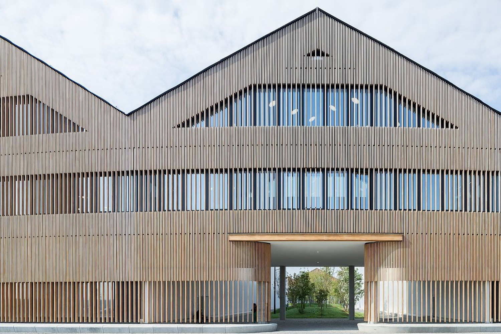
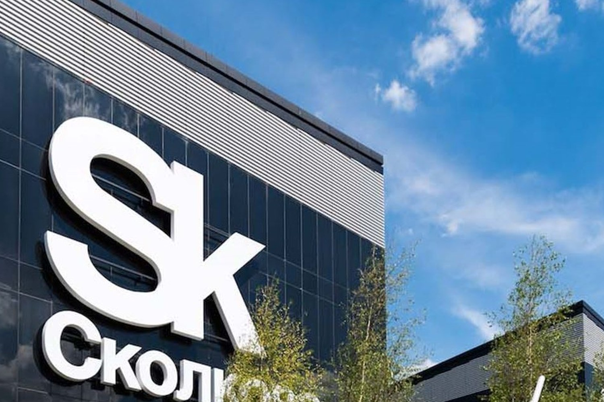
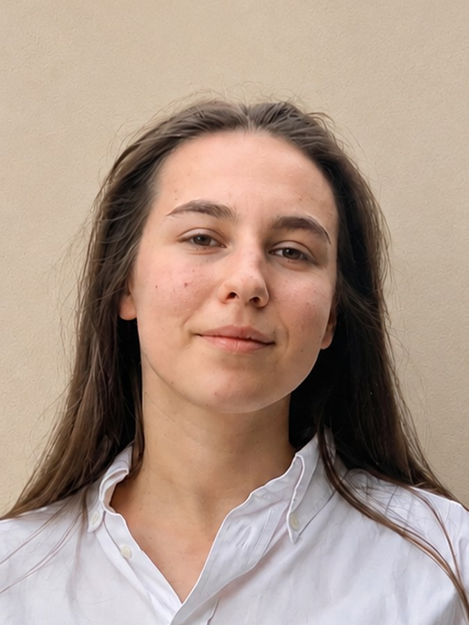

Вникай
Посмотри на проблему глазами изобретателя: кто, в каком контексте и почему увидел то, чего не видели остальные.
История · эмпатия · контекстЗа один день участник интенсива проживёт полный цикл рождения идеи — от погружения в исторический контекст и формулировки проблемы до расчёта бюджета, проверки гипотезы и защиты собственного проекта перед экспертами.
Всё это на стыке истории, экономики и технологий, в живом формате: кейсы, дискуссии, экскурсия, командный квест и защита перед «инвестиционным комитетом».
Концепция дизайн-мышления учит эффективно находить решения в условиях неопределённости и состоит из пяти фаз, которые позволяют претворить абстрактную идею в осязаемый проект. За день участник интенсива проходит путь от понимания важности контекста и эмпатии к тестированию собственного проектного решения.
Посмотри на проблему глазами изобретателя: кто, в каком контексте и почему увидел то, чего не видели остальные.
История · эмпатия · контекстПроверь идею данными, экономикой и нейросетями. Красивая идея и работающая идея — не одно и то же, и разницу можно посчитать.
Экономика · данные · промтингПридумай решение реальной бизнес задачи вместе с командой.
Команда · синтез · решениеПреврати идею в проект: собери модель, посчитай ресурсы и сроки, покажи, за счёт чего это сработает.
Проект · модель · расчётЗащити проект перед «инвестиционным комитетом», ответь на вопросы и получи обратную связь.
Защита · вопросы · экспертыЗнакомство, введение в программу дня, формирование команд.
Великие открытия и идеи, изменившие мир: исторический контекст, проблематика своего времени и люди, стоявшие за изобретениями. Почему одни идеи меняют мир, а другие остаются на бумаге — и что нужно, чтобы идея была реализована и произвела эффект.
Отдельный акцент — эмпатия к человеку и контексту, в котором рождается изобретение.
Как претворить идею в жизнь: определяем MVP, считаем стоимость прототипа, объём необходимых инвестиций и срок их возврата.
Нейросети как инструмент реализации идеи: собрать и проанализировать данные, работать со статистикой, исследовать информацию, структурировать материал, ускорить отдельные этапы работы.
Главный навык блока — понимать, где ИИ действительно усиливает человека, а где мышление нельзя передавать никому.
Как идеи становятся реальностью сегодня. Обзорная экскурсия по действующим изобретениям — каждое разбирается по одной логике: проблема → идея → решение → эффект. В финале — встреча с резидентом Технопарка «Сколково» и история его собственного изобретения.
Командный проект, в котором сходится весь день: сформулировать проблему, создать идею, структурировать решение, применить нейросети как инструмент, оценить реалистичность, смоделировать проект — и защитить его перед «инвестиционным комитетом».
С каждой командой на протяжении всей работы находится модератор.
Поэтому день проходит в инновационном центре «Сколково» — среди действующих компаний, лабораторий и изобретений, которые создаются прямо сейчас.

Инновационный центр «Сколково»
Большой бульвар, 30, стр. 1

Инновационный центр «Сколково»
Большой бульвар, 42, стр. 1
Понимание, как и благодаря чему рождаются идеи, которые меняют мир.
Навык быстрой экономической оценки идеи.
Практику осознанного использования ИИ — как инструмента, а не замены собственного мышления.
Живое знакомство с экосистемой Сколково: Технопарк, реальные разработки, действующие резиденты.
Собственный командный проект, пройденный от идеи до защиты перед экспертами.

Для записи свяжитесь с организатором.